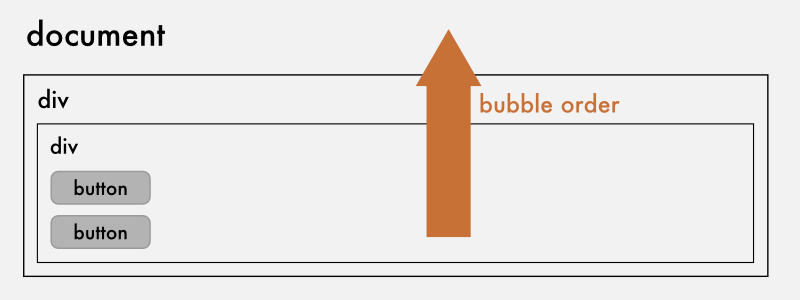
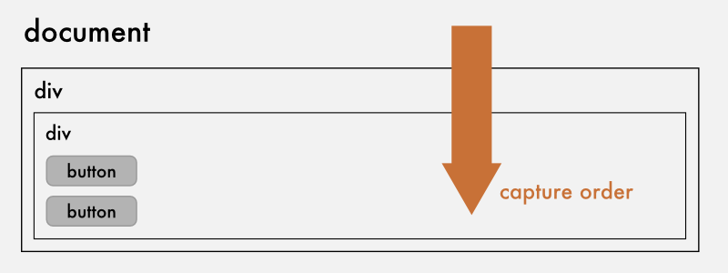

targetObject.addEventListenertargetObject.removeEventListenerConsider the following code:
element.addEventListener(
'click', // event name
handleClick, // event handler
false // event, um?!
);What is that third value specifying anyway?


Consider the following (somewhat contrived) example:
function captureKey(evt) {
eve(
'evematrix.key',
evt.target,
String.fromCharCode(evt.charCode)
);
}
document.addEventListener('keypress', captureKey, true);That's our core application!
// let's write a key handler to do something
eve.on('evematrix.key', function(key) {
// create a new span element
// after a period of time, add a transform that will
// move the span element off the screen
setTimeout(function() {
stylar(span).set(
'transform',
'translate(0px, ' + (window.innerHeight + 100) + 'px)'
);
}, 50);
// hacky - after the transition has executed remove it
setTimeout(function() {
document.body.removeChild(span);
}, 1700);
});var socket = new WebSocket('ws://mymagicmachine:8001/');
// once the socket is opened
socket.onopen = function() {
eve.on('*', function() {
// if the scope is the websocket, abort
if (this === socket) return;
socket.send(eve.nt() + '|' +
Array.prototype.join.call(arguments, '|'));
});
};
socket.onmessage = function(evt) {
// when we receive a message, break it up and map it to eve
var args = evt.data.split('|');
// trigger even
eve.apply(eve, [args[0], socket].concat(args.slice(1)));
};var children = document.body.children;
eve.on('evematrix.key', function() {
if (!(this instanceof WebSocket)) {
// get the last child and apply the mytext class
children[children.length - 1].classList.add('mytext');
}
})(10);